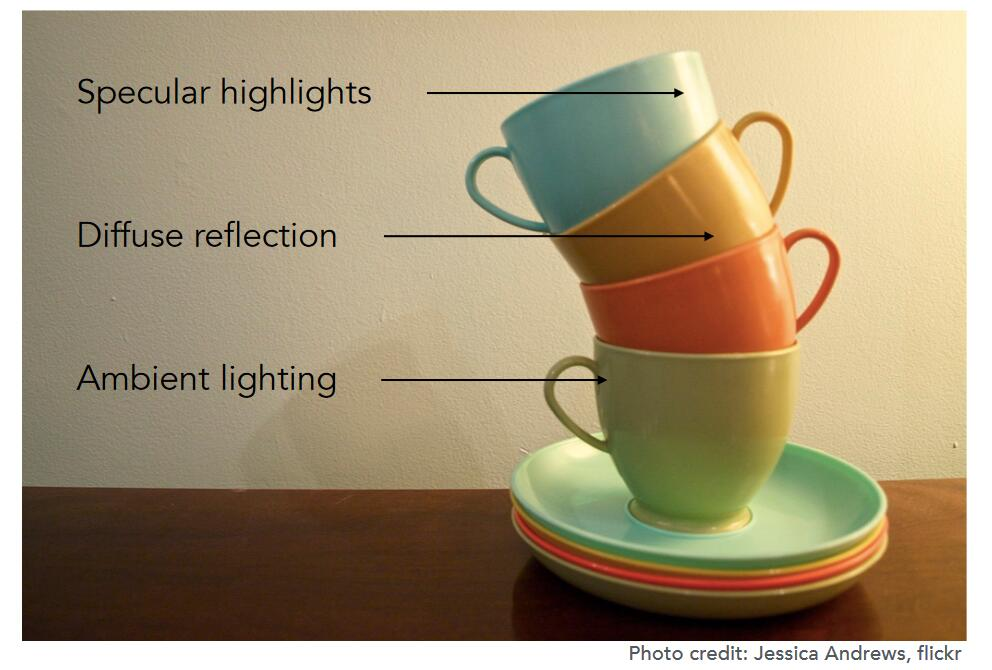
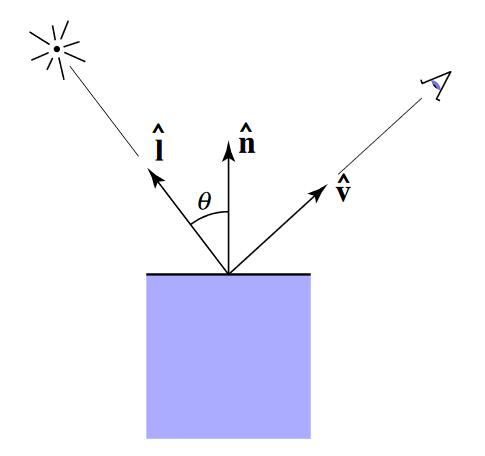
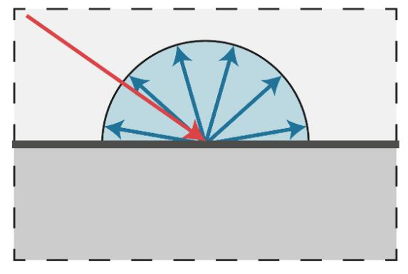
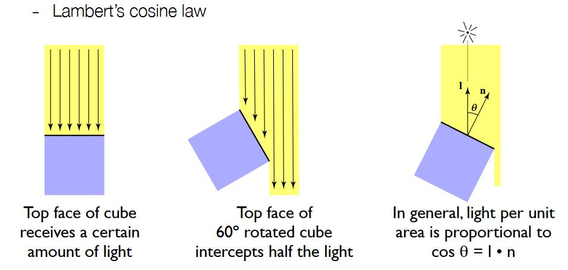
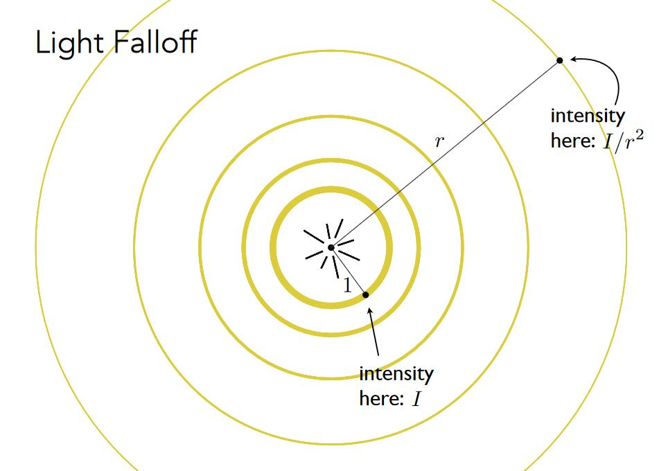
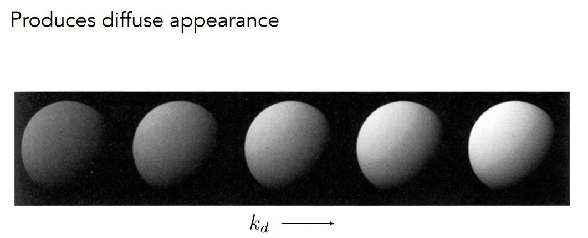
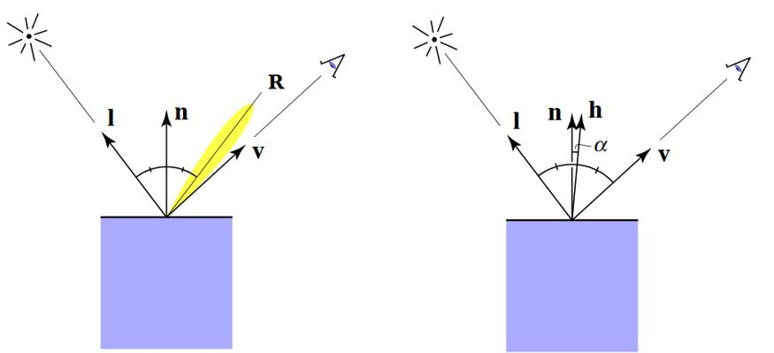
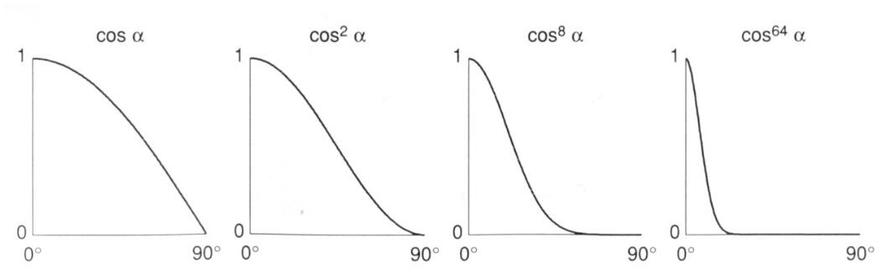
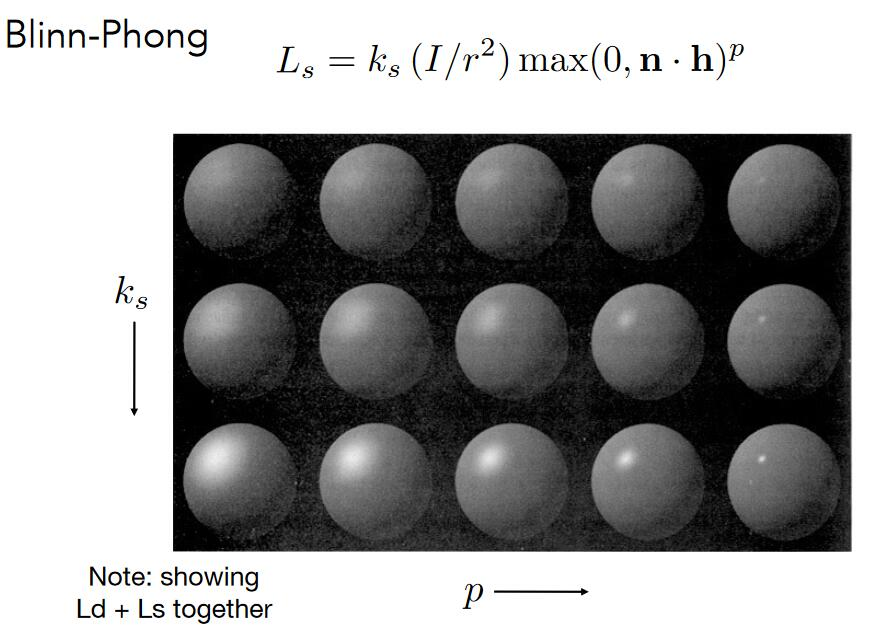
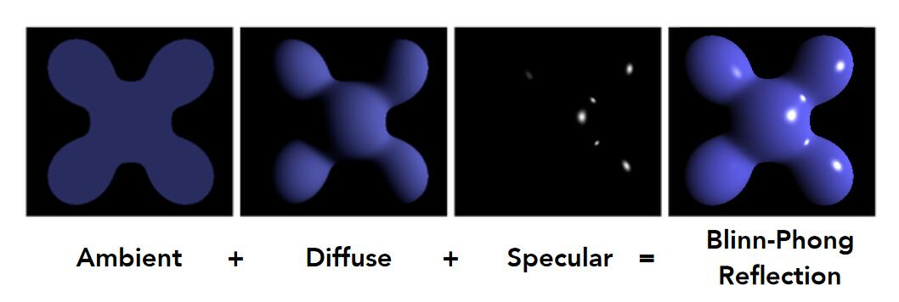

Blinn-Phong 反射模型
这是一个简单基础的模型，它将光分成了三种成分，分别针对这三种成分的光，模拟光源对物体的作用。

- 高光(Specular highlights): 光线反射到镜面反射附近
- 漫反射(Diffuse reflection): 光线被反射到各个方向上
- 环境光(Ambient lighting): 假设任何一个点会接收到来自环境的常量的光
定义

- shading point：当前要计算着色的点，位于物体表面。物体在shading point处的属性包含color, shinness。
- （n）Surface normal：假设点附近极小范围内是一个平面，n为平面指向外的法向量
- （v）Viewer direction：观测方向
- （l）Light direction：光源方向，与光照向point的方向相反
📌 \(\hat{l}\)如何计算？
光源的位置减去shading point的位置，得到向量，然后求出单位长度\(\hat{l}\)
三种成分
漫反射
[47:35]
漫反射具有以下特点：
- 打到 point 上的光线被均匀地反射出去，（与观测点v没有关系）

- l 与 n 的夹角决定了 point 接收到的光线的强度(Lambert's cosine law)

- [54:48] 圆心是点光源，向外辐射能量。根据能量守恒定理（不考虑传播损耗），每个圆上的能量之和不变，因此某点处的能量与它到光源的距离平方是反比。

通过以上分析，定义漫反射的能量公式为：
\[ L_d=k_d\left( I/r^2 \right) \max \left( 0,\boldsymbol{n}\cdot \boldsymbol{l} \right) \]
- \(L_d\)： shading point接收到的漫反射能量
- \(k_d\)： shading point对光的吸收率 (例如，不同的颜色对光的吸收能力不同)
- \(\left( I/r^2 \right)\)： 有多少能量到达了point
- \(\max \left( 0,\boldsymbol{n}\cdot \boldsymbol{l} \right) \)： 从正面照射的光，漫反射才有意义 （非正面射入，\(\boldsymbol{n}\cdot \boldsymbol{l}\)的值小于零）
- \(\boldsymbol{n}\cdot \boldsymbol{l}\)： 表示有多少能量被point接收
效果：

高光项

R 为物体镜面反射的方向，当 v 和 R 接近时，会看到高光。
\(h=\frac{v+l}{||v+l||}\) 代表了 v+l 的方向， h 称为半程向量 half vector。 [08:25] 当v和R接近时，v+l 的方向(h)与n接近:
💡 为什么用\(n\cdot h\)代替\(v\cdot R\)？
因为\(n\cdot h\)更容易计算
通过以上分析，定义高光项的能量公式为：
\[ L_s=k_s\left( I/r^2 \right) \max \left( 0, \cos \alpha \right) =k_s\left( I/r^2 \right) \max \left( 0, n\cdot h \right) ^p \]
- \(k_s\) 吸收率，通常认为高光是白色，也就是全吸收
- \(\left( I/r^2 \right)\) 表示有多少能量到达了point
- \(\max \left( 0, n\cdot l \right) ^p\) 表示n和h的接近程度
- \(L_s\) 同样应该考虑有多少有多少能量被接收，但Blinn Phong模型将这个因素简化了
💡 公式中为什么会有指数p？
在保证函数趋势不变的同时，让高光更集中，通常取[100, 200]

效果：

环境光照项
Blinn Phong模型假设所有 point 接收到来自环境光的强度相同，且为常数:
\[ L_a=k_aI_a \]
与\(l\)和\(v\)无关
模型总述

\[ L=L_a+L_d+L_s=k_aI_a+k_d\left( I/r^2 \right) \max \left( 0,n\cdot l \right) +k_s\left( I/r^2 \right) \max \left( 0,n\cdot h \right) ^p \]
💡 为什么不考虑point到v的距离对能量的影响？？
这部分比较复杂,Blinn-phong模型没有考虑这个问题
本文出自CaterpillarStudyGroup，转载请注明出处。
https://caterpillarstudygroup.github.io/GAMES101_mdbook/